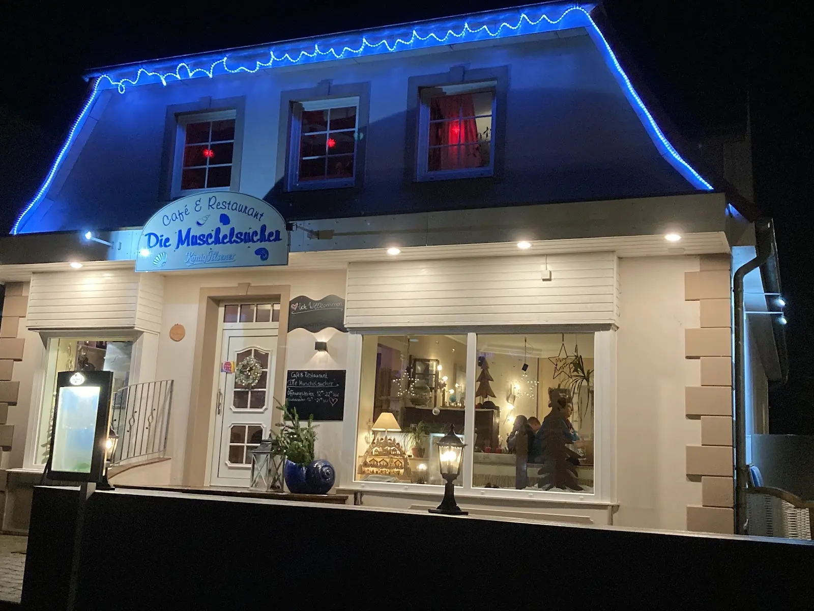

Küche ab 12:00 Uhr
Café & Restaurant · Fußgängerzone Norddorf
Die Muschelsucher
Mittags Waffeln und Kuchen, abends Fisch und Steaks vom Lavasteingrill. Von unserer Terrasse aus sehen Sie das ganze Treiben in Norddorfs Fußgängerzone.
04682 4488 anrufenWas es bei uns gibt
Vom Mittag bis in den Abend
Zwei Gesichter, ein Lieblingsort
Tagsüber ein gemütliches Inselcafé, abends ein Restaurant mit Lavasteingrill.
12:00 – 17:30 Uhr
Tagsüber
Kleine Gerichte für die Mittagspause zwischen Strand und Dünen:
- Hausgemachte Waffeln
- Selbstgebackener Kuchen
- Softeis
- Fischbrötchen
Abends bis 22:00 Uhr
Am Abend
Unsere Küche zeigt, was sie kann:
- Fischgerichte
- Steaks vom Lavasteingrill
- Pasta und vegetarische Gerichte
- Überraschungsmenü mit 2, 3 oder 4 Gängen, ganz nach Ihrem Wunsch
Unsere Küche
Was bei uns auf den Tisch kommt
Für Familien und Feiern
Kinder willkommen. Feste auch.
- Kinderfreundlich: Waffeln, Softeis und Platz für die ganze Familie.
- Terrasse: Draußen sitzen und dem Treiben in der Fußgängerzone zuschauen.
- Familienfeiern: Geburtstag, Jubiläum oder Wiedersehen im Urlaub? Sprechen Sie uns an.
Besuchen Sie uns
Mitten in Norddorf
Küche12:00 – 22:00 Uhr
Kleine Gerichte12:00 – 17:30 Uhr
Laut amrum.de und Google Maps, Stand Oktober 2026. Ruhetage und Saisonzeiten bitte bei Umsetzung ergänzen.
- AdresseDie Muschelsucher · Strunwai 9 · 25946 Norddorf auf Amrum
- Telefon04682 4488
- E-Maildie.muschelsucher@web.de